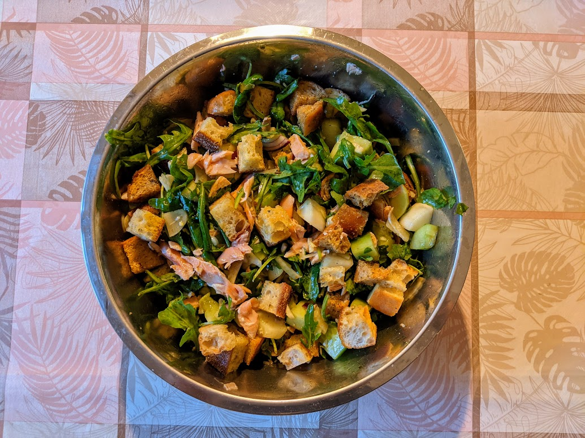

Panzanella au concombre et saumon

Pour 5-6 personnes :
- 400g de pain, idéalement de campagne
- Deux beaux concombres
- Un petit oignon rouge
- Un petit fenouil
- 100-150g de roquette
- 250g de filets de saumon (avec leur peau)
- (Facultatif) Une cuillère à soupe de sésame ou de grains de carvi
- Trois cuillères à soupe de vinaigre de vin rouge, ou même balsamique
- Sel, poivre, huile d'olive
- Faire préchauffer le four à 180°C. Couper le pain en cubes de 2cm de côté environ. Disposer les cubes sur une plaque de four recouverte de papier sulfurisé, saler, poivrer, arroser d'huile d'olive, et enfourner une dizaine de minutes jusqu'à ce que ça prenne une jolie couleur dorée. Il faut que ça soit bien croustillant à l'extérieur mais toujours un peu tendre à l'intérieur.
- Pendant ce temps, éplucher et couper les concombres en morceaux un peu plus petits que les cubes de pain, éplucher et couper l'oignon rouge en petits morceaux, laver et couper la partie blanche du fenouil (sans le cœur) en tranches bien fines.
- Lorsque le pain est bien doré, le réserver, et augmenter la température du four à 215°C. Disposer le saumon sur le papier sulfurisé, le saler, le poivrer, et l'enfourner pour 4 minutes par centimère d'épaisseur (sur la partie la plus épaisse, donc si la partie la plus épaisse fait 2.5cm d'épaisseur, enfourner pour 10 minutes).
- Pendant ce temps, mélanger le vinaigre, le sésame ou grains de carvi, et la même quantité d'huile d'olive.
- Lorsque le saumon est cuit, l'émietter à la fourchette (sans la peau) et le mélanger avec les légumes et la sauce.
- Servir idéalement immédiatement, ou rapidement, en mélangeant le pain et le reste de la salade au tout dernier moment.
Remarque : comme pour la Panzanella classique, si on n'est pas sûr que tout va être mangé, c'est une bonne idée de réserver le pain à part (dans un sac en papier, en dehors du frigo).
Retour à la liste des recettes